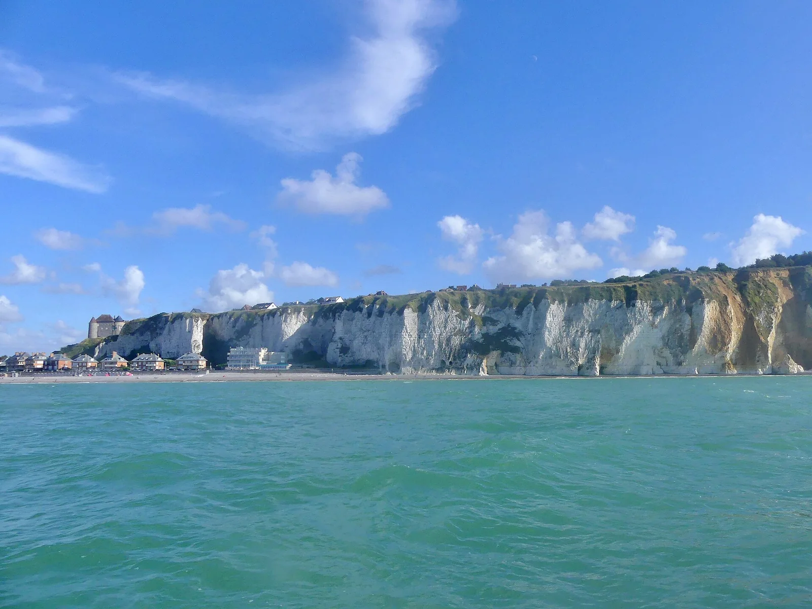

Dieppe
Seine-Maritime, France · baignade, kayak, kitesurf

Grande plage de galets dominée par son château, baignade surveillée et spot de kite face aux falaises.
- Lieu
- Seine-Maritime, France
- Niveau
- Débutant
- Activités
- baignade, kayak, kitesurf
- Type d'eau
- Mer / océan
- Coordonnées
- 49.93, 1.08 (position approximative du secteur)
Dangers à connaître
- Galets et entrée d’eau abrupte.
- Trafic du port à l’est de la plage.
Le conseil d'Ocean Buddy
Baignade surveillée l’été ; le kite se pratique à l’ouest.
Ouvrir dans Ocean Buddy Télécharger sur l'App Store
Source : Description historique Ocean Buddy · vérification externe en attente.